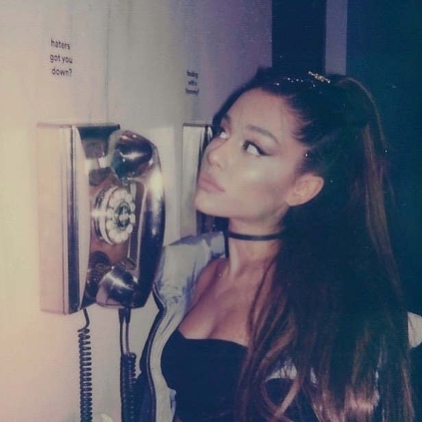
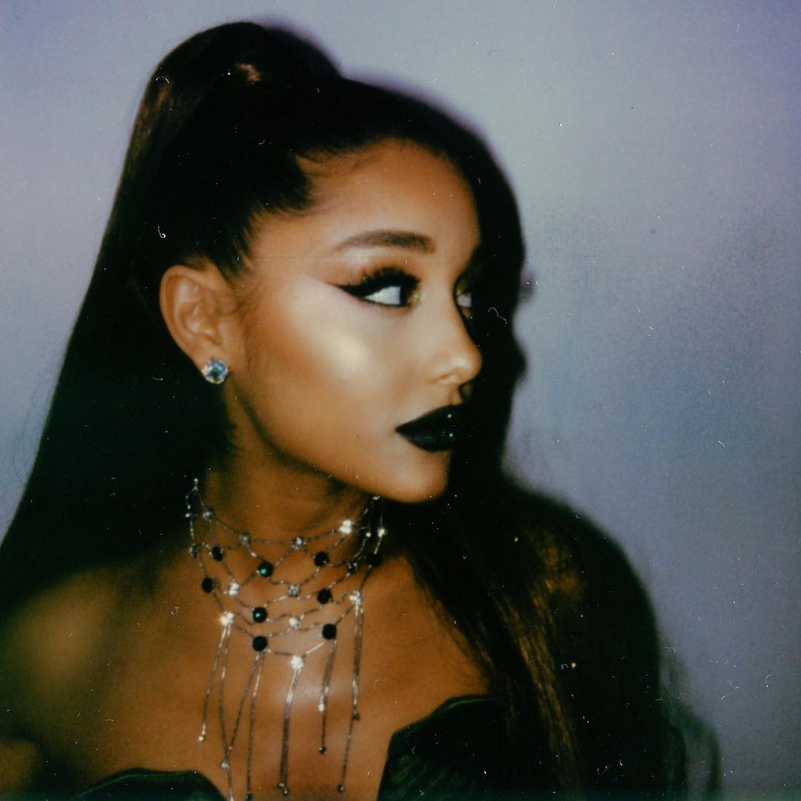

SING YOUR HEART OUT
I like to sing in the bathroom, in front of the glass, then I'm still bored / not in the mood, it's better to sing, and with us singing our brains will be happy and our hearts are happy too, huh..If you also have a singing hobby, then continue to develop that hobby, who knows that you can become famous musicians, why don't you sing even though your voice is mediocre, at least you guys have tried and practiced.You can also sing / karaoke at a karaoke place with your best friend, emmm yeah, it's just missing out on the feeling of saturation, guys, refresing is that, hehe
AS LONG AS WE LIVE, THERE IS NEVER ENOUGH SINGING
Benefits if you have a singing hobby :
1. Eliminate stress, if you are in a state of chaos, confusion, sadness, heartache, etc., try to sing, all of you pour out your heart, usually if you are sad again, the song is definitely a sad song? haha admit it
2. Make your heart happy
If it is developed it can be an extraordinary talent
Eeiittzz, but remember, guys, if you sing also remember the place, make sure your voice doesn't disturb other people, hehe

Ariana Grande
Ariana Grande is one of my favorite singer. she is an American singer and actress. She began her career in 2008 in the Broadway musical drama 13, before playing Cat Valentine in the Nickelodeon Victorious television series (2010–2013) and spinoff Sam & Cat (2013–2014). He has also performed in various theaters and television roles and has been voicing in several television and film series. Grande's music career began in 2011 with the background song Music from Victorious. In 2013, he released his first studio album Yours Truly, which topped the Billboard 200 US. The album's main single, "The Way", debuted on the top 10 of the Billboard Hot 100. Grande's second studio album, My Everything (2014), won number one in the US and was in the top 10 in 24 countries. With the main single "Problem" and several other singles, she was in the top 10 on the Billboard Hot 100 for 34 weeks and had the most top 10 singles among other artists in 2014. The following year, Grande held his first world tour, The Honeymoon Tour , to promote My Everything. In 2016, he released his third studio album Dangerous Woman, which won number two on the Billboard 200. The main single with the same title debuted and immediately perched at number 10 on the Billboard Hot 100, making Grande the first person on this charts to have The main single on the first three albums debuted less than 10th place in the US. [2] In 2017, Grande organizes an international tour of the Dangerous Woman Tour. She released her fourth studio album, Sweetener, in August 2018. The album is number one on the Billboard 200 and in several other countries

